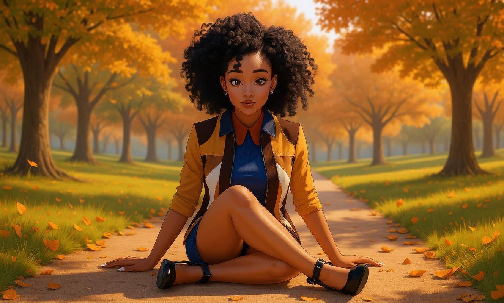
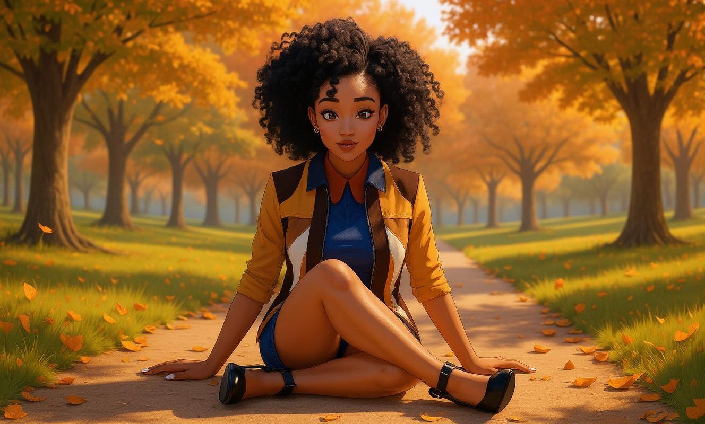

Veronica
 
Veronica is a rare human ally in the
Saiyan Victoria universe.
She plays a pivotal role during the Broly raid
by finding and reviving Wargirl after a
devastating blow. Unlike the Saiyan sisters, Veronica relies on a
scientifically engineered suit and electric gauntlets, allowing her to
stand alongside super-powered fighters through ingenuity and
courage.

Veronica is a rare human ally in the
Saiyan Victoria universe.
She plays a pivotal role during the Broly raid
by finding and reviving Wargirl after a
devastating blow. Unlike the Saiyan sisters, Veronica relies on a
scientifically engineered suit and electric gauntlets, allowing her to
stand alongside super-powered fighters through ingenuity and
courage.
Lore
The Broly Battle
During the raid against Broly, Wargirl is blasted across the battlefield and left gravely injured. Veronica discovers her, revives her, and reassures her despite the danger. When Wargirl doubts how a human could fight Broly, Veronica reveals a science-powered combat suit— fueled by Dragon Ball energy—and gauntlets that generate massive purple electricity. She enters the fight and, with other raiders, helps drive Broly away.
Romantic Undertone
Though Wargirl thanks her, she slips away before realizing Veronica’s feelings. Veronica becomes smitten from the moment of rescue and spends weeks daydreaming about Wargirl, building the resolve to find her again.
The Search
Determined, Veronica begins tracking Wargirl across Conton City. Her
search leads her to Kai, who points her toward
Wargirl’s workplace at the Conton City Resort. By the
time she arrives, Wargirl has already left to avenge
Victoria Black and is later kidnapped
by the Black Knight. Despite the chaos of god-tier conflicts, Veronica
continues her human, tireless search.

Reunion at the Club
Veronica eventually tracks Wargirl to the Conton City Club, where Wargirl works after her rescue. Nervous but determined, Veronica steps through the entrance—setting up their long-awaited reunion. To be continued.
Powers and Abilities
- Science-Powered Suit — A durable combat exo-suit enhanced with a Dragon Ball fragment,
boosting speed, stamina, and resistance to damage for short engagements.
- Electric Gloves — Engineered gauntlets that generate and discharge large amounts of purple electricity,
enabling raid-level strikes in bursts.
- Tactical Ingenuity — Relies on human innovation, planning, and adaptability rather than raw ki output.
Personality
- Grounded and courageous, with a gentle, romantic streak centered on Wargirl.
- Resourceful problem-solver who compensates for lack of ki with engineering and grit.
Key Relationships
- Wargirl — The woman she saves and the focus of her romantic arc.
- Kai — Provides the lead that helps Veronica continue her search for Wargirl.
- Victoria Black — Indirect connection through Wargirl’s arcs and aftermath of major battles.
- Binary — Awareness of her destructive power, though their paths rarely cross.
- Harmony — Seen as a trusted ally through Wargirl.
- Vanessa — Connection by association with the sisters’ circle.
- Evil Victoria — Feared from a distance, recognized as a looming threat.
Notable Moments
- Finds and revives Wargirl during the Broly raid.
- Fights Broly using the science suit and electric gauntlets.
- Begins an extended search across Conton City, culminating at the Conton City Club.
Trivia
- One of the only humans who directly participates in high-level battles in the series.
- Her technology links her power source to Dragon Ball energy despite her being human.
- Serves as the human perspective in a universe dominated by Saiyan and divine power.
- As a lesbian, she is very nervous about reuniting with Wargirl, yet she intimately daydreams of her very often.